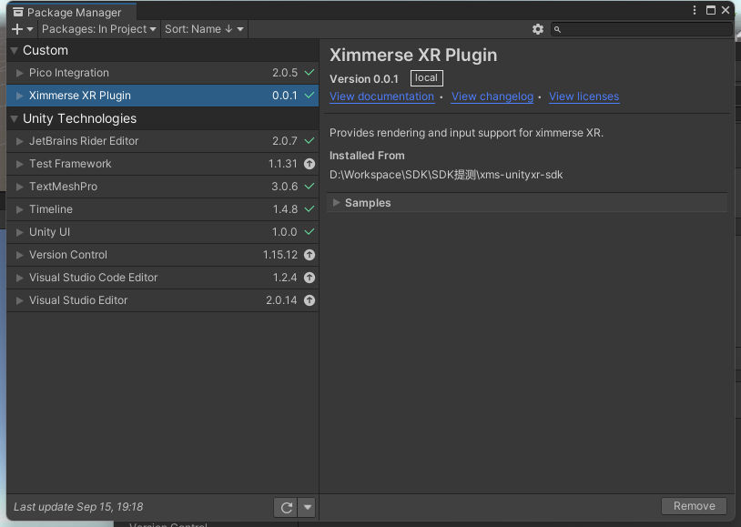
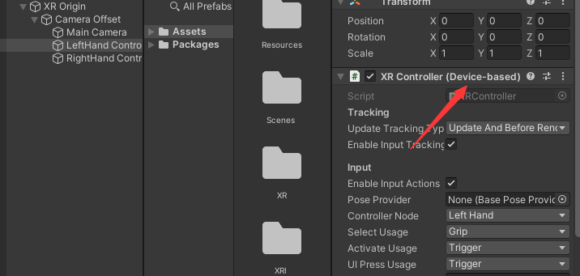
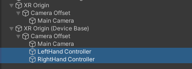
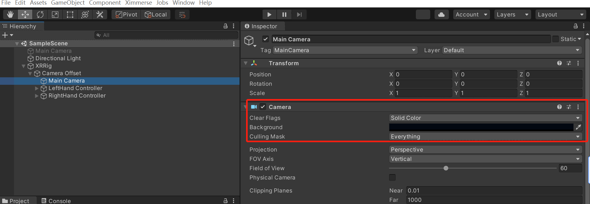
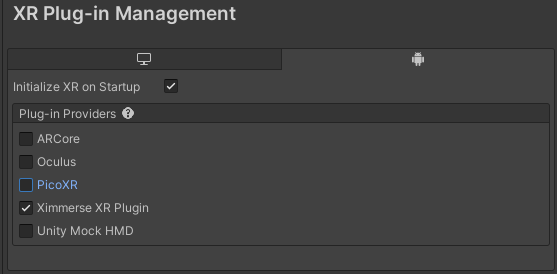
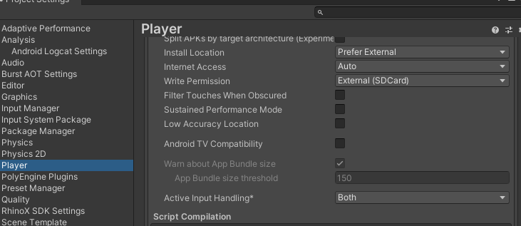
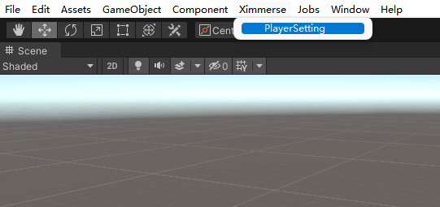
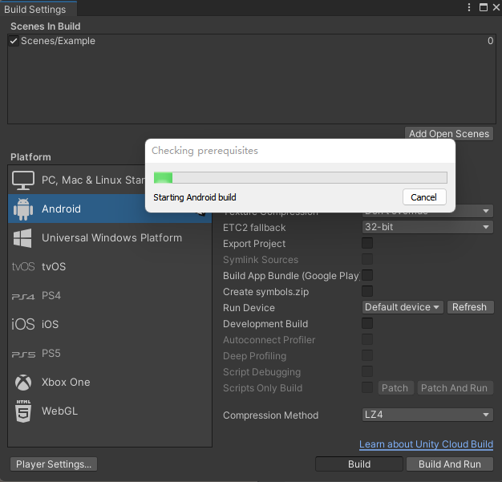
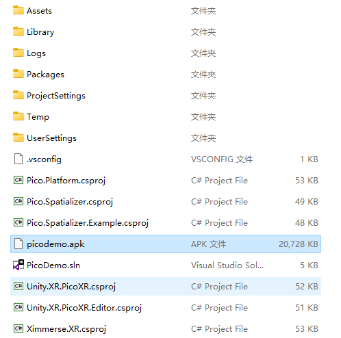

VR一体机应用移植到RhinoX Pro
因为RhinoX Unity XR SDK是基于Unity XR SDK框架，如果您之前的VR一体机项目也是基于Unity XR SDK进行开发的，您可以 参考如下方式进行移植。
Note
不是基于Unity XR的项目，无法进行移植
1 打开VR项目并导入SDK
使用Unity Hub打开项目并导入Ximmerse SDK

Note
该项目为Pico Neo3头显上运行的Demo，后续步骤将演示将其移植到Unity XR SDK并在RhinoX Pro头显上运行。
2 修改XR组件
根据Demo中XRController交互方式选择生成Unity XR SDK 中的XR Origin (ActionBase)/XR Origin (Device Base)组件。
将XRController组件移动至XR Origin (Device Base)组件下方。
删除原场景中的XR Origin，选择Unity XR SDK创建的XR Origin (Device Base)->Camera Offset->Main camera, 在Inspector中：
Camera的Clear Flags选为Solid Coloer
Background选择纯黑色
如下图所示：

3 修改项目设置
点击菜单项File- > Build Settings打开Build Settings 窗口，点击Player Settings -> XR Plug-in Management，将PicoXR修改为Ximmerse XR Plugin。
Note
以下步骤与入门指南内容中流程相同，熟悉该流程可跳过教程，编译完成后安装APK即可。
点击菜单项Edit->Project Settings->Player->Other Setting，将Active Input Handling修改为Both，此操作需要重启项目后生效。
重启项目后，点击菜单项Ximmerse->PlayerSetting，将设置更改为推荐值。如果想使用自己的设置，可以选择忽略此步骤。强烈建议使用推荐设置，未使用推荐设置可能导致设备无法正常运行，显示异常等问题。

4 编译并运行
点击Add Open Scenes按钮添加当前Scene，然后点击Build 按钮，设置APK名称和路径，开始编译:
等待编译完成，Unity将弹出保存路径，可以看到编译出的APK文件。

Note
Unity XR SDK与Pico SDK的交互方式均已接入XR Interaction Toolkit，即XRController交互方式相同，修改平台后可直接安装运行。